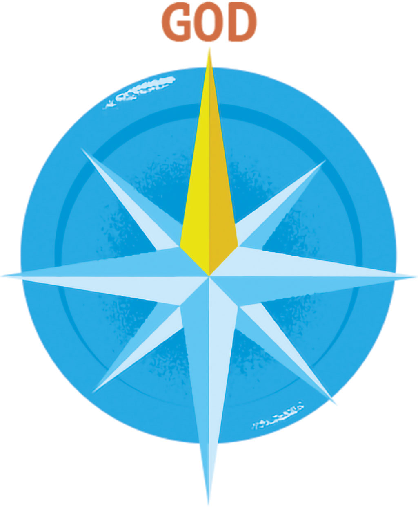

[A combination sample is comprised of different standard components combined together, or with different element(s) and/or layout(s). This section provides some common combination samples that will occur in the RE5 ePub for your
preview and is not meant to be referenced in your markup]
[This section displays some previews that consist of headers with elements and layouts that will generally occured in the RE5 ePub.]
Unit Header + Print Page Ref. + Coloured Title + Text with Background Colour:
[Below is a sample preview of a Green Unit Header combined with Print Page Ref. 02, Title 03 with Light Green Background Colour applied to the entire page.]
printed p. 80
Unit
1The Gift of Our Faith
Let's Explore
Faith is a gift from God. But it is up to us to decide whether we will open this gift. Will we explore and celebrate it? Will we share it with others? As well as being a gift, faith inspires our minds toward God, and it is also our response to God...
[Below is a sample preview of a Purple Chapter Header combined with Print Page Ref. 02.]
printed p. 7
Chapter5How Does the Church Help Us Prepare for the Coming of Christ?
Code Snippet for Vendor:
printed p. 7
Chapter5How Dese the Church Help Us Prepare for the Comings of Christ?
Sidebar Combinations
[Sidebar components can be used to treat marginalia features in the book. This section displays some previews of combination sidebar components which includes elements and layouts that will generally occured in the RE5 ePub.]
Sidebar + Subtitle + Blockquote + Poem:
[Below is a sample preview of Sidebar 01: We Read the Bible combined with Subtitle, Paragraph, Blockquote with sourceline. The content within the blockquote is a Poem with two stanzas, where the second stanza is not italicized.]
Code Snippet for Vendor:
Sidebar + Text + Informalfigure + Caption + Float-Right:
[Below is a sample preview of Sidebar 02: Let Us Pray combined with Paragraphs and an Informalfigure, where the informalfigure is floating right to the paragraph text.]
Code Snippet for Vendor:
Sidebar + Text + Blockquote + Divider + Note:
[Below is a sample preview of Sidebar 03: In the Parish combined with Paragraph, Blockquote with sourceline, Generic Divider with width-75, and Note 01 that is center-aligned with width-66.]
Code Snippet for Vendor:
Sidebar + 2-Column Ordered List + 3-Column Informalfigure:
[Below is a sample preview of Sidebar 04: Faith Facts combined with 2-Column Ordered List and 3-Column Informalfigure.]
Code Snippet for Vendor:
[Notice that there is a div tag wrapping the ol tag. This is needed because the numbers by default will push outside the left boundary alignment. Need a div to force it within it.]
Sidebar + 2-Column Grid + Text + Informalfigure:
[Below is a sample preview of Sidebar 06: Words to Inspire combined with 2-Column Grid with Paragraph in the first column and informalfigure in the second column.]
Code Snippet for Vendor:
Column Combinations
[This section displays an example responsive column layouts available in the RE5 Student ePub design template.]
Title + 2-Column Grid + Text + Informalfigure + Shadow:
[Below is a sample preview of a section with a Yellow Shadow style that contains Title 05, Paragraph, and Informalfigure with Float-Right.]
Sanctifying Grace
We receive sanctifying grace through Baptism. It is like true north on our spiritual compass. It points us toward God and tells us that His kingdom is our destination. It helps us hear and follow His call throughout our lives.

Code Snippet for Vendor:
[Notice the note class has no additional note_01 classes ...etc with it. By default it is white Coloured background and this section is using a note class to have the border-radius effect on it.]
Sanctifying Grace
We receive sanctifying grace through Baptism. It is like true north on our spiritual compass. It points us toward God and tells us that His kingdom is our destination. It helps us hear and follow His call throughout our lives.
Card Combinations
[Card components are generally used to style specific sections to set it apart from the main narrative text. This section displays some previews of cards that has a combination of components, elements and layouts that will generally
occured in the RE5 ePub.]
Card + Text + Informalfigure + Blockquote + Note:
[Below is a sample preview of Card 01: Focus on Scripture combined with Paragraph, Informalfigure, Blockquote with sourceline, and Note 01 (where the content of the blockquote is arranged in a 2-column layout with paragraph in the
first column and notes in the second column).]
Focus on
Scripture
Jesus’ Sermon on the Mount probably confused many people. Be meek and merciful? This teaching was so different from the way that people dealt with the world. Even today, we often seek praise over humility, or revenge
over mercy. But Jesus teaches that truly being blessed and full of joy comes from putting God first. Following the Beatitudes means taking on the attitudes of Jesus and living them every day. The power of the Holy Spirit at work in us increases our
understanding of Jesus’ teachings and gives us the courage to live like Him.
Blessed are...
...the poor in spirit, for theirs is the kingdom of heaven.
God promises.
...those who hunger and thirst for righteousness, for they will be filled.
God provides, when we seek what is good.
—Matthew 5:3—12
Code Snippet for Vendor:
[Notice that there is a grid-container inside the blockquote itself in order to split the quote and the note. There is also another grid-container for the source of the blockquote in order for the source to aligned properly on
the right side of the first column width.]
Focus on
Scripture
Jesus’ Sermon on the Mount probably confused many people. Be meek and merciful? This teaching was so different from the way that people dealt with the world. Even today, we often seek praise over humility, or revenge
over mercy. But Jesus teaches that truly being blessed and full of joy comes from putting God first. Following the Beatitudes means taking on the attitudes of Jesus and living them every day. The power of the Holy Spirit at work in us increases our
understanding of Jesus’ teachings and gives us the courage to live like Him.
Blessed are...
...the poor in spirit, for theirs is the kingdom of heaven.
God promises.
...those who hunger and thirst for righteousness, for they will be filled.
God provides, when we seek what is good.
—Matthew 5:3—12
Card + Note + Title + Informalfigure + Float-Left:
[Below is a sample preview of Card 02 combined with Note 04 aligned to the center, Title 05, Paragraph, and Informal Figure with Float-Left.]
The Archangels
Feast Day: September 29
St. Michael
Because he fought against Satan and continues to defend and protect us from evil, St. Michael the archangel is usually pictured as an armoured warrior. His name appears four times in Scripture. He is first mentioned in Daniel
12:1: “At that time Michael, the great prince, the protector of your people, shall arise.…” The Book of Revelation describes a war in which St. Michael defeats Satan.
Code Snippet for Vendor:
[Notice that title_04 and title_05 class inside a card_02 will make the titles red, overwriting the default title_04 and title_05.]
The Archangels
Feast Day: September 29
St. Michael
Because he fought against Satan and continues to defend and protect us from evil, St. Michael the archangel is usually pictured as an armoured warrior. His name appears four times in Scripture. He is first mentioned in Daniel
12:1: “At that time Michael, the great prince, the protector of your people, shall arise.…” The Book of Revelation describes a war in which St. Michael defeats Satan.
[Below is a sample preview of Card 04 - Orange: How We Celebrate combined with Paragraph, Informal Figure with Width-33 aligned to the center, Blockquotes, Note 01, and Purple Dividers.]
How We Celebrate
Sacred Tradition teaches us that Mary, the mother of Jesus, was conceived without the stain of original sin. The Church celebrates this event—the Immaculate Conception—on December 8. The Feast of the Nativity of the
Blessed Virgin Mary is celebrated nine months later, on September 8.
God is not a human being, that he should lie, or a mortal, that he should change his mind...
—Numbers 23:19
God is perfect. He does not lie or deceive.
For your steadfast love is as high as the heavens; your faithfulness extends to the clouds.
—Psalm 57:10
God's love and faithfulness are limitless.
Code Snippet for Vendor:
How We Celebrate
Sacred Tradition teaches us that Mary, the mother of Jesus, was conceived without the stain of original sin. The Church celebrates this event—the Immaculate Conception—on December 8. The Feast of the Nativity of the
Blessed Virgin Mary is celebrated nine months later, on September 8.
God is not a human being, that he should lie, or a mortal, that he should change his mind...
—Numbers 23:19
God is perfect. He does not lie or deceive.
For your steadfast love is as high as the heavens; your faithfulness extends to the clouds.
—Psalm 57:10
God's love and faithfulness are limitless.
List Combination
[A section that has list elements, layouts and styles that are used in conjunction with each other.]
Background Colour + Title + Text Colour + Definition List:
[Below is a sample preview of Title 05 combined with Definition List with Light Purple Background applied to the section, and where the definition term has a Dark Purple Background with White Text Colour.]
Catholic Social Justice Principles
Worship
the feeling or expression of reverence and adoration for God.
Prayer
a solemn request for help or expression of thanks addressed to God or an object of worship.
Code Snippet for Vendor:
Catholic Social Justice Principles
Worship
the feeling or expression of reverence and adoration for God.
Prayer
a solemn request for help or expression of thanks addressed to God or an object of worship.
Practice Combinations
[Practice components are generally used to style end-of-section features, such as practice questions or reflection exercises. This section displays some previews of practices that uses practicelists and practicelists with no numbering.]
Practice + Practice List (With Numbers):
[Below is a sample preview of Practice 01: Know, Think, Infer combined with Practice List.]
Know, Think, Infer
What does having faith mean?
Why can we completely trust God, and how do we build that trust?
Code Snippet for Vendor:
Know, Think, Infer
What does having faith mean?
Why can we completely trust God, and how do we build that trust?
Practice + Practice List (Without Numbers):
[Below is a sample preview of Practice 03 - Light Purple: Growing in Faith combined with Practice List, and Ordered List without Numbers.]
Growing in
Faith
Focus:
How do Tradition and rituals help us prepare for the comings of Christ during Advent?
Deepen Your Faith:
How can Advent symbols deepen my faith? Which symbol of Advent is the most meaningful to me?
Code Snippet for Vendor:
Growing in
Faith
Focus:
How do Tradition and rituals help us prepare for the comings of Christ during Advent?
Deepen Your Faith:
How can Advent symbols deepen my faith? Which symbol of Advent is the most meaningful to me?

 Focus on
Scripture
Focus on
Scripture


 How We Celebrate
How We Celebrate
 How We Celebrate
How We Celebrate

 Know, Think, Infer
Know, Think, Infer
 Growing in
Faith
Growing in
Faith
 Growing in
Faith
Growing in
Faith